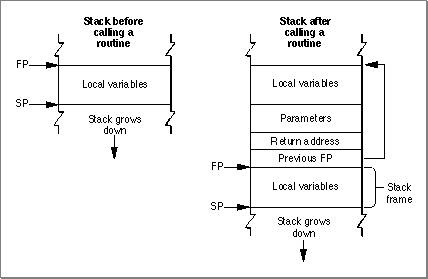

Legacy Document
Important: The information in this document is obsolete and should not be used for new development.
Important: The information in this document is obsolete and should not be used for new development.


Classic 68K Stack Structure and Calling Conventions
The classic 68K runtime architecture uses a stack-based parameter-passing system, as shown in Figure 11-1.Figure 11-1 A 68K stack frame before and after calling a routine

The stack grows from high-memory addresses towards low-memory addresses. The end that grows or shrinks is usually referred to the "top" of the stack, despite the fact that it is at the lower end of memory occupied by the stack.
The boundaries of the stack are defined by two pointers:
Parameters passed by a routine are always placed on the stack above the frame pointer, while local variables are always placed below the frame pointer. Data passed onto the stack is always aligned to 2 bytes. If you pass a single-byte parameter (such as a single character), a padding byte is added by decrementing the stack pointer by 2 bytes instead of 1 (the padding byte is the most significant byte).
- The stack pointer (SP), which points to the top of the stack and defines its current downward limit. Operations that push data onto the stack or pop data off of it do so by adjusting the value of the stack pointer. The classic 68K runtime architecture uses the A7 register as the stack pointer.
- The frame pointer (FP), which points to the base in memory of the current stack frame, the area of the stack used by a routine for its parameters, return address, local variables, and temporary storage. By keeping track of the frame pointer value, the operating system can find the beginning of the stack frame when it has to pop data off the stack. The classic 68K runtime architecture uses the A6 register as the frame pointer.
The classic 68K runtime environment supports many non-standard calling conventions. For example, C calling conventions can vary depending on the type of call (some system calls have their own conventions) and the development environment. However, in C you can specify Pascal conventions for a routine by using the
pascalkeyword. Pascal calling conventions are standardized and supported in all 68K development environments.For example, the routine declared in C as
int mooFunc(UInt8, double);uses C calling conventions, while
pascal int mooFunc(UInt8, double);uses Pascal calling conventions.
- Note
- These parameter passing conventions are part of Apple's standard for procedural interfaces. Object-oriented languages may use different rules for their own method calls. For example, the conventions for C++ virtual function calls may be different from those for C functions.

Subtopics
- Pascal Calling Conventions
- SC Compiler C Calling Conventions
- Register Preservation